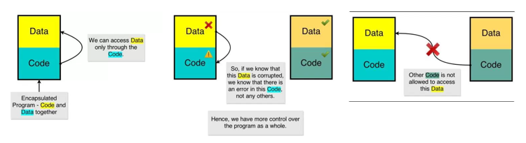

OOPs Concept
Classes Class is a user defined data type.
A class is an entity that determines how an object will behave
and what the object will contain. In other words, it is a
blueprint or a set of instruction to build a specific type of
object.
Although I introduce OOP in this post, this post mainly to get you started with the notion of classes and objects. But, before we start our discussion on OOP, let us see why the modern world is so caught up with this programming paradigm. OOP offers you three important things �
- More Control : A program can be
roughly divided into data (the variables) and code (the
functions or the set of instructions). We know that the code
performs some operations over the data. If we can somehow
encapsulate the data and code such that certain data can be
associated with only a certain code and no other code is
allowed to touch the data directly, then we can easily find out
which code is faulty. This gives us more control over the code�
Wait� Not getting it..? Let�s take up some sketches to make it
clear�!
 - Re-usability : The Object Orientation feature Inheritance, allows us to reuse the existing code. This is a boon to companies building massive applications. If you can re-use the code properly, we can save a lot of time.
- Remember Less : The Object Orientation feature Polymorphism, enables us to remember less, thus making us more productive.